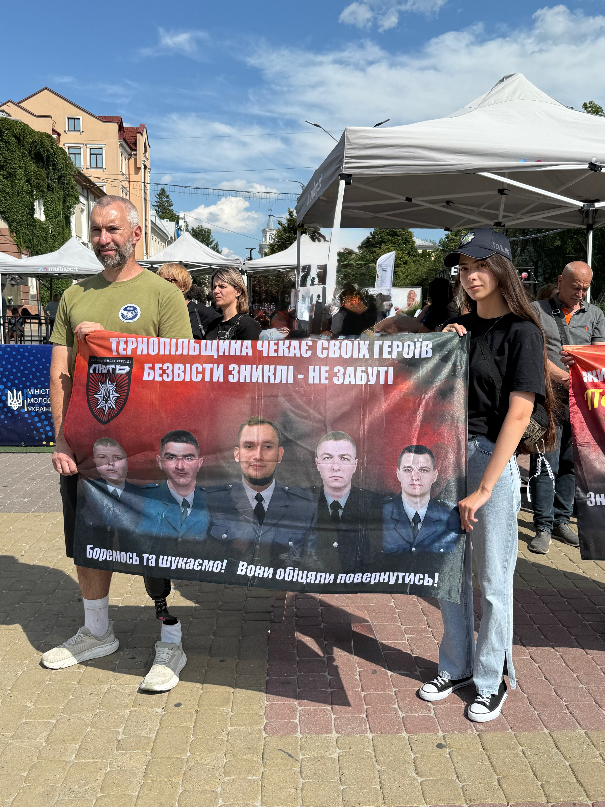
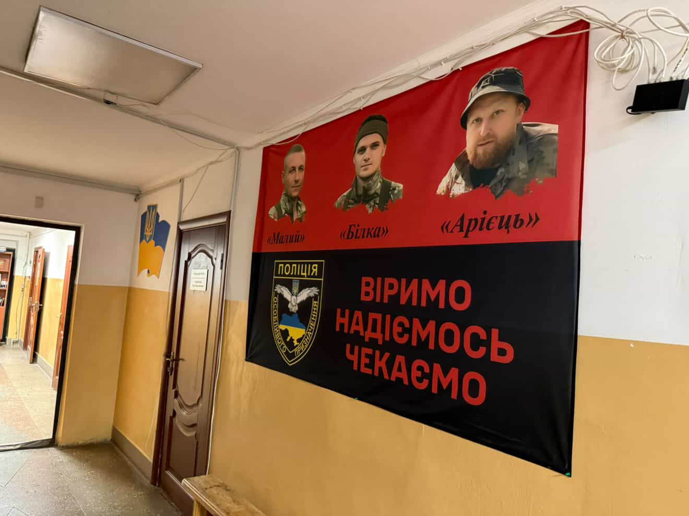

Я — твій голос 🤍
«Мовчання не повертає додому.
Тому я говорю.
За Олега.
За кожного, хто ще не вдома.»
29 червня 2024 року моє життя розділилося на «до» і «після».
З того дня я зрозуміла, що якщо мовчатиму — про Олега знатиме менше людей. Тому кожна акція, кожне інтерв'ю, кожна зустріч і кожен крок стали способом нагадувати про нього та про всіх Захисників, які досі не повернулися додому.
Ця сторінка — історія не лише боротьби. Це історія любові, віри, надії та людей, які щодня доводять: наші ще не вдома.
Перша акція
Це була перша акція, яку я відвідала, щоб нагадати про Олега та всіх Захисників, які досі не повернулися додому.


Київ
Одна з перших акцій, де ми разом нагадували про наших рідних, які досі не повернулися додому.


Львів
Цього дня я дала інтерв'ю місцевому виданню, щоб ще більше людей почули історію Олега та інших Захисників, які зникли безвісти.


Інтерв'ю для телеканалу ІНТБ
Цього дня вийшло моє інтерв'ю для телеканалу ІНТБ. Я розповіла історію Олега, про його зникнення, про шлях очікування та про те, чому важливо говорити про кожного Захисника, який досі не повернувся додому.
Повне інтерв'ю тривалістю 12 хвилин стало можливістю ще раз нагадати людям, що за кожним статусом «зниклий безвісти» стоїть жива людина, її родина та надія на повернення.
Алея Надії, м. Тернопіль
Відкриття Алеї Надії стало символом пам'яті, єдності та віри у повернення наших Захисників.

Київ

Львів

Вінниця

Автопробіг у Тернополі
Близько сотні автомобілів об'єдналися заради однієї спільної мети — нагадати, що наші рідні ще не вдома і ми не перестанемо їх чекати.

«Наші ще не вдома» — Ланівці
Цей день став для мене одним із найважливіших за весь час очікування.
Усе почалося з бажання організувати у рідному для нас з Олегом місті Ланівці автопробіг та акцію-нагадування про Захисників, які вважаються зниклими безвісти.
Для проведення заходу я звернулася до міської ради та поліції. Моєю метою було отримати дозвіл, забезпечити безпеку учасників і зробити подію гідною пам'яті наших Героїв.
Мою ідею щиро підтримали. До організації активно долучилися міський голова, працівники міської ради, поліція, місцеві волонтери та небайдужі мешканці громади.
Саме в цей період місто готувалося до відкриття Алеї Надії — місця, присвяченого Захисникам, які вважаються зниклими безвісти. Так народилася ідея об'єднати відкриття Алеї, автопробіг та акцію «Наші ще не вдома» в одну спільну подію.
Завдяки спільним зусиллям влади, поліції, волонтерів, родин Захисників та небайдужих людей вдалося провести подію, яка об'єднала місто навколо однієї важливої думки:


Підтримка 🤍
За цей час поруч було дуже багато людей. Кожне добре слово, кожна участь в акції, кожне фото чи відео, кожен репост і кожна хвилина небайдужості допомагають не втрачати віру. Дякую всім, хто продовжує говорити про Олега та про наших Захисників, які досі не повернулися додому.





Фотоальбом
Фотографії з акцій, зустрічей, інтерв'ю та моментів, які стали частиною цього шляху.